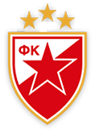
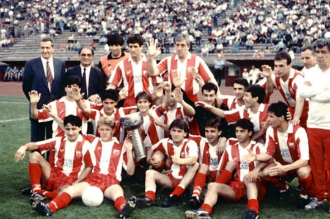
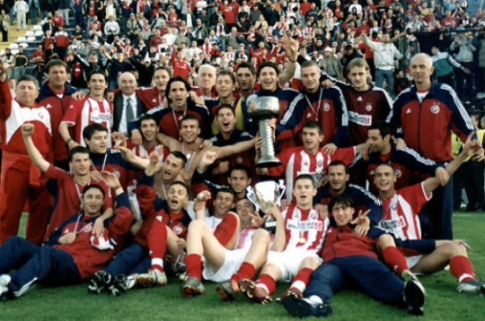
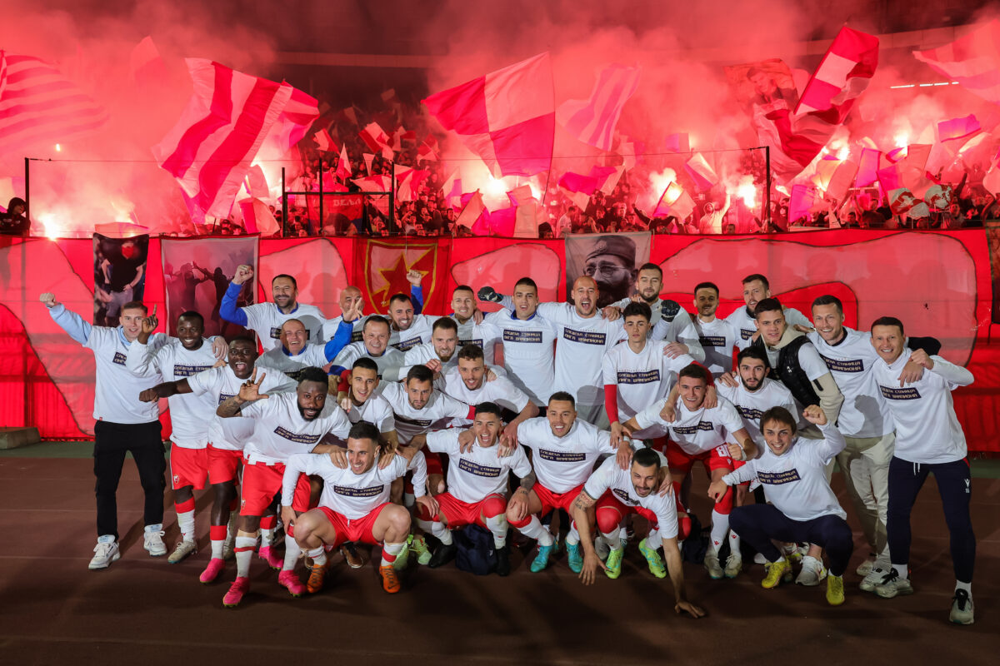
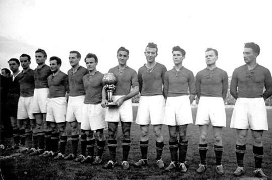
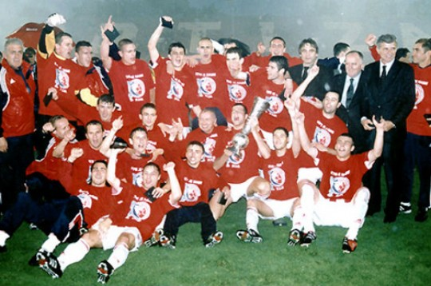
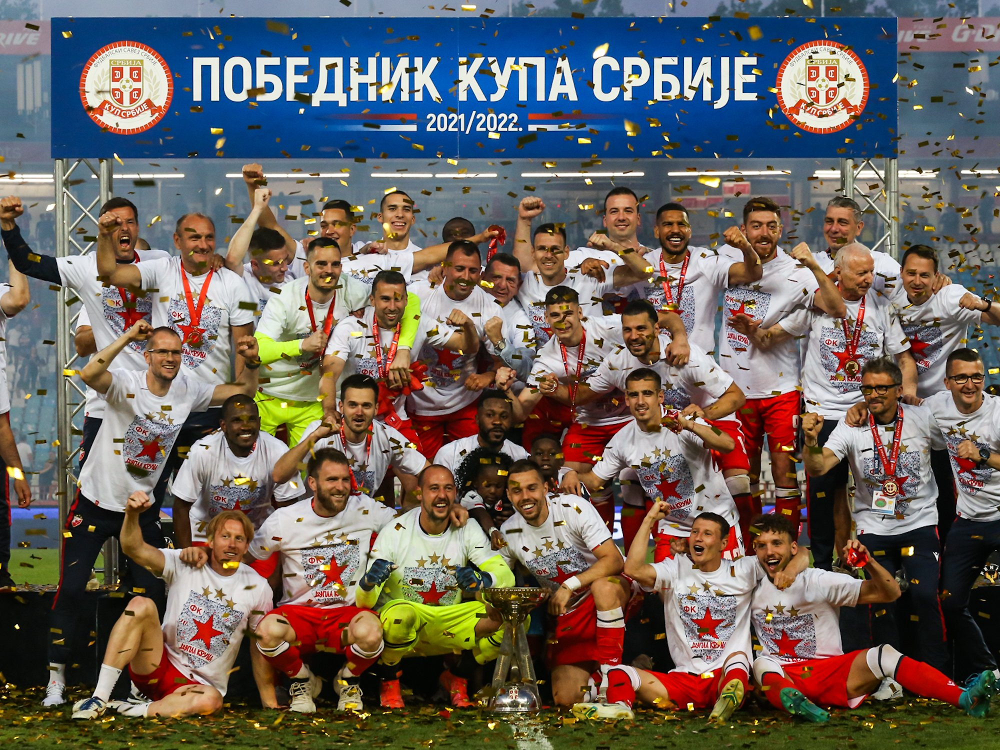
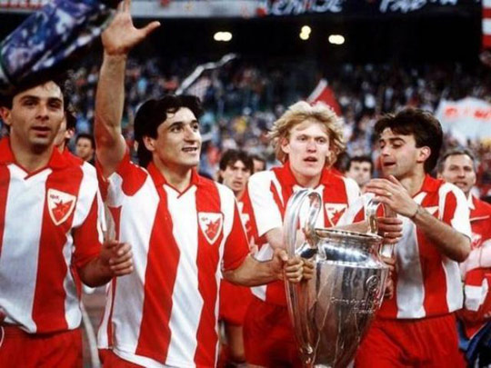
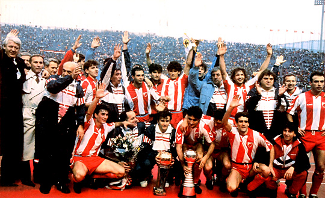
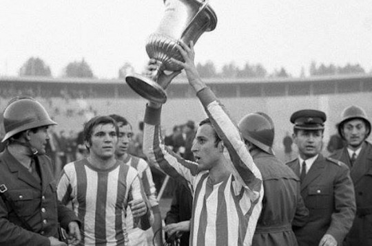

Yugoslav First League - 19 (record)

Zvezda winning the League in 1989/90
First League of Serbia and Montenegro - 5 (record)

Zvezda winning the league in 2003/04
Serbian SuperLiga - 9 (record)

Zvezda winning the league in 2022/23
Yugoslav Cup - 12 (record)
Serbia and Montenegro Cup - 9 (record)
Serbian Cup - 6



Zvezda winning the cup in 1949
Zvezda winning the cup in 2001/02
Zvezda winning the cup in 2021/22
European Cup / Uefa Champions League - 1
Intercontinental Cup - 1
Mitropa Cup - 2



Zvezda winning The UEFA Champions League in 1991
Zvezda winning The UEFA Champions League in 1991
Zvezda winning The UEFA Champions League in 1991